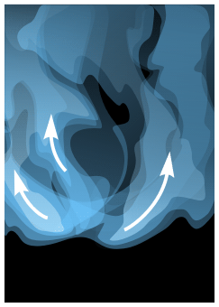

Воспламеняющаяся спичка
Прежде чем приступить к построению горящей спички необходимо внимательно изучить по фотографиям, что представляет из себя этот процесс. Поняв как это происходит, нам будет легче изобразить это.
Я импортировал эти фотографии в документ и расположил вне листа, что бы была возможность постоянно сверяться с тем, что у меня получается.
Итак, открываем программу и создаем новый документ (Ctrl+N).
1. Фон. Два раза щелкаем по инструменту «прямоугольник» Rectangle Tool (F6) получаем прямоугольник в размер листа.
Заливаем черным цветом , убираем обводку (жмем по палитре: ЛКМ — заливка, ПКМ — обводка). Фиксируем (ПКМ выбираем действие Lock Object ).
2. Огонь. Нарисовать форму пламени можно с помощью пера Pen Tool или сделать из прямоугольника Rectangle Tool (F6), предварительно преведя в кривые (Ctrl+Q)
В режиме редактировния объекта Shape Tool (F10) используем скругление узлов. Так же добавляем новые, дважды кликая по контуру фигуры.
Заливаем оранжевым цветом (RGB: 255; 140; 0). Далее дублируем (ЛКМ тянем за фигуру не отпуская жмем ПКМ) и из нее делаем форму по-меньше, но без удаления узлов . Заливаем светло-желтым цветом (RGB: 255; 247; 214). С помощью Transparency Tool в появишейся наверху панели добавляем обеим фигурам сплошную прозрачность (Uniform Fill). Первому объекту ставим 100% прозрачности, второму — 47%.
Делаем интерактивный переход между этими фигурами инструментом Interactive Blend Tool (интерактивное перетекние). Жмем на этот инструмент (должна появиться черная стрелочка с 3-мя квадратиками), далее жмем на объект (появится 2 белых маркера соеденных пунктирной линией, один маркер принадлежит выделенному объекту, другой предназначен для 2-го предполагаемого объекта) и тянем на 2-й объект.
Изменить цвет фигурам, уже учавствующих в перетекании, можно с помощью докера Color. Он находится в главном меню Window > Dockers > Color. Там должна быть нажата кнопка Fill (Заливка) и нужно закрыть замочек (Auto-applies Color). Из 3х иконок расположенных в ряд выбираем центральную (Show color viewers).

Теперь в появишемся поле можно изменять цвет фигуры в "режиме реального времени". Изменять цвет нужно только "крайним" фигурам, учавствующих в перетекании. Что бы их найти заходим в упрощенный режим (View > Simply Wireframe).
Выделяем фигуру, возвращаемся обратно в нормальный режим (View > Enhanced или жмем Shift+F9) и в докере водим перекрестье по полю, добиваясь нужного оттенка.
По умолчанию для режима перетекания стоит 20 шагов, но это значение можно поменять на другое.
Таким же способом получаем еще два языка пламени. Совмещаем.
3. Спичка. Нарисовать спичку не так сложно. К тому же в данном случае не требуется особой детализации, т. к. половина спичечной головки будет скрыта под пламенем. Используем градиентную заливку на плоской поверхности и радиальную - на округлых.
4. Дым. Рисуем фигуру с неровными очертаниями точно так же как это делали с формой огня. Заливаем голубым цветом (110; 199; 255). В режиме прозрачности Transparency добавляем объекту линейную прозрачность Linear. На одном маркере ставлю 100%, на другом 44%.
Делаем несколько подобных объектов с разными оттенками голубого и разной прозрачностью. Редактируя их, пытаемся сэмититровать природу дыма - газ, выделяемый серой, выходит под напором и расходится в стороны и вверх.

Результат.
Разлочиваем задний фон (ПКМ - unlock) и делаем радиальную заливку Fountain Fill (F11) от черного к темно-красному в центр. С помощью инструмента Interactive Fill (G) двигаем центр заливки прямо за огонь.
-----------------------------
Примечание.
ЛКМ — левая кнопка мыши
ПКМ — правая кнопка мышы
-----------------------------
Автор: DAZ - 29.10.2009

Да нормальный урок :) Пусть будет.
Просьба урок не удалять. :)
ПС. По конкурсу "лучший урок месяца" есть небольшие изменения. Вернее пояснения: Уроки скорее будут судится не по прошествии какого то месяца, а после набора определённого кол-ва уроков. Согласитесь, выбирать из 3-5 уроков нет смысла. Так же уроки присланные на конкурс будут хранится в этой ветке форума, лучшие из них будут перенесены в раздел сайта "УРОКИ", а победитель получит приз :)
Администрация приносит свои извинения за такие перемены. Мы надеемся что все отнесутся с пониманием. Как говорится "хорошая мысля приходит опосля". В ближайшее время буду внесены соответствующие изменения и перенесены в форум некоторые уроки. :)
Sancho
хорошо )
Дима, спасибо за урок ;)
Станислав, не за что! )
Кореломаны всех стран, объединяйтесь!!!... )))
Спасибо, мне как раз огонек нужен был не давно, позаимствую немного из твоего урока.
Я перенёс на cdrpro :)